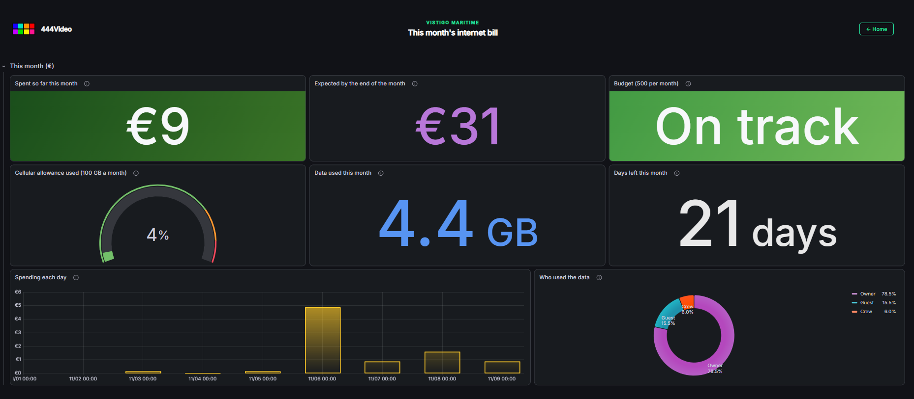
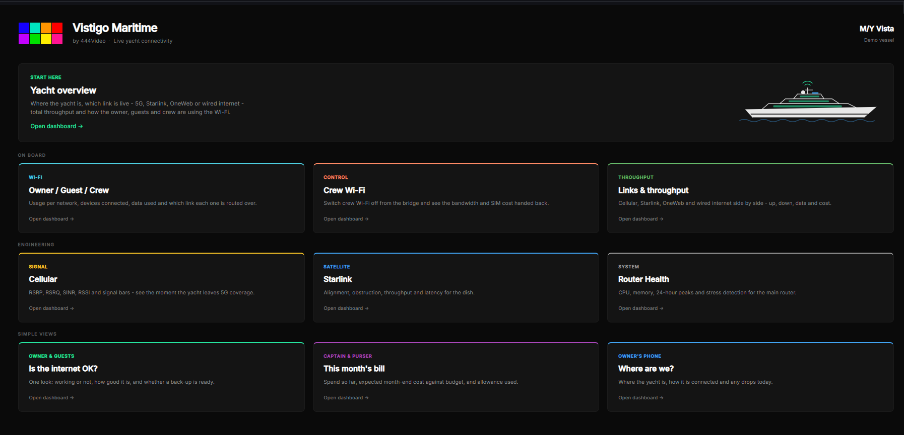
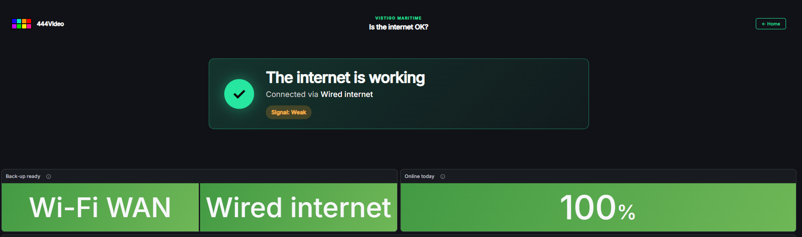

Vistigo Maritime · for yachts
Know what the yacht's internet is costing, before the bill arrives.
Vistigo reads the Starlink dish, the Peplink router and every Wi-Fi network on board. It shows which link is carrying the traffic, who is using it, and what the cellular data is costing, as it happens. Switch crew Wi-Fi off from the bridge, and see the month's spend against budget before anyone signs the invoice.

Where the money goes, and how you keep it
Starlink and marina internet are flat-rate. Cellular is charged by the gigabyte, and that's where a bill runs away: a dish blocked by the mast, a week in port on 5G, the crew streaming on the SIM. Vistigo watches each of those as it happens, so you can act the same day.
Only the SIM is costed
Vistigo knows which link each network is routed over. Traffic on Starlink or shore internet counts as zero. Only what really went over cellular is priced, at your rate per GB.
Links & throughput
The month, before it ends
Spend so far, the expected month-end figure and the allowance used, checked against the budget you set. Over budget turns red while there's still time to do something about it.
This month's bill
Crew Wi-Fi, under control
Switch the crew network off from the bridge, or schedule it around guest trips. The crew's share of the bandwidth goes back to the owner and guests, and the dashboard shows what it saved.
Crew Wi-Fi
Catch a fallback early
If the dish loses sight of the sky and the yacht drops to cellular, you see it within a minute, along with what it's costing per hour. You don't find out from the invoice.
Yacht overview
Crew Wi-Fi: one switch, two wins
Each network on board runs on its own VLAN, so Vistigo can split usage and cost between owner, guests and crew. When the crew network is switched off, its bandwidth goes back to the guests and its streaming stops costing you cellular data. The switch is logged on every graph, so you can see exactly what changed.
Switch it from the bridge. The bridge network is never switched.
- From the bridge. One button, and the bridge network itself is never switched.
- On a schedule. Off for guest trips, back on when the yacht is in port.
- Route-aware cost. Crew traffic is only priced while it's going over cellular.
- Bandwidth handed back. See the crew's average speed returned to owner and guests.
- A record of the switch. Every on and off is marked on the timeline.
A screen for everyone on board
One home page for the yacht, then a dashboard for each job. The owner gets a yes or no, the purser gets the bill, and the engineer gets every reading from the dish and the modems.


Owner and guests
Is the internet OK? A green tick, the link it's on and whether a back-up is ready.
Captain and purser
This month's bill against budget, and who used the data.
Owner's phone
Where are we? Position, link and any drops today.
Engineer or ETO
Starlink alignment and obstruction, 4G and 5G signal, router CPU and memory, every link side by side.
Where the numbers come from
The dish only answers on the yacht's own network, so a small collector on board asks it directly. The router, modems and Wi-Fi already report to Peplink's InControl2, so we collect from there. Nothing on board accepts incoming connections.
Throughput, latency, how much sky is blocked, where it's pointing, reboots
Sits behind the dish on the yacht's network and pushes out over HTTPS
Which link is live, every WAN's status and health check, CPU and memory, GPS position
One call per router, split into system, WAN and Starlink figures
Devices, data used, signal and which link each network is routed over
Each network runs on its own VLAN, so usage and cost split cleanly
RSRP, RSRQ, SINR, RSSI and signal bars, per modem
Read from the same router status as above
Live upload and download on Starlink, OneWeb, cellular, Wi-Fi WAN and marina internet
Runs as its own service, so a fault here can't stop the rest
Your yacht
Grafana, in 444Video's house style
- Yacht overview
- This month's bill
- Crew Wi-Fi
- Owner / Guest / Crew
- Is the internet OK?
- Where are we?
- Starlink, Cellular, Router Health
Alerts: yacht offline, running on cellular, spend heading over budget, dish obstructed.
17-19 November 2026 · RAI Amsterdam
See it live at METSTRADE
We're bringing a working rig: Starlink, a Peplink router and owner, guest and crew networks, all feeding the dashboards on this page. Switch crew Wi-Fi off and watch the bandwidth and the cost move. Email us to book a time on the stand.
It all runs on the same system
Add another product whenever you like. The data lands in the same place, so a dropped stream and the satellite link it was on show up on the same timeline.
Tell us what you can't see.
Tell us about the yacht: the links on board, the networks and what the data bill looks like. We'll show you it in Vistigo.